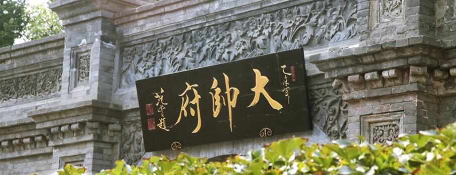
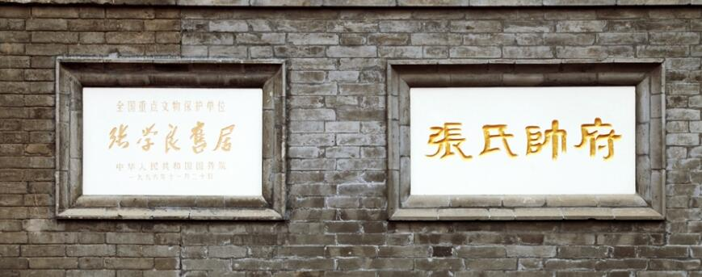
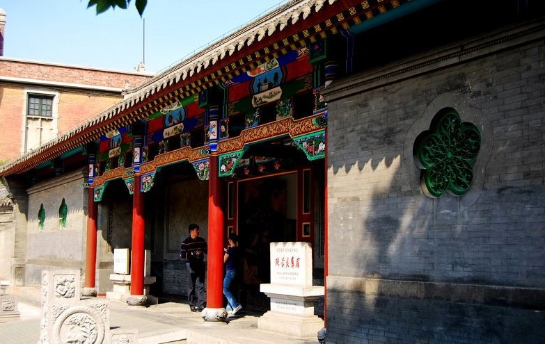

张氏帅府（英语：Commander Zhang's Mansion），又称“大帅府”或“少帅府”，
位于辽宁省沈阳市，是张作霖及其长子张学良的官邸和私宅。张氏帅府始建于民国三年（1914年），
总占地3.6万平方米，总建筑面积为2.76万平方米。2002年更名为张氏帅府博物馆暨辽宁近现代史博物馆，
主要有大、小青楼、西院红楼群及赵四小姐楼等。张氏帅府由张作霖兴建，民国五年（1916年）入住。
以后又不断扩建，逐步形成了由东院、中院、西院和院外建筑等四个部分组成的的建筑体系，
各个建筑风格各异，有中国传统式、中西合璧式、罗马式、北欧式、日本式。20世纪后期，
“张氏帅府”被国家列为全国优秀近代建筑群。
20世纪后期，“张氏帅府”被国家列为全国优秀近代建筑群。1985年，
沈阳市人民政府依法以“张氏帅府”称谓公布这一建筑群为市级文物保护单位。
1988年，辽宁省政府也以“张氏帅府”名称公布其为省级文物保护单位。
1996年，国务院以“张学良旧居”称谓公布其为第四批全国重点文物保护单位。
1998年，辽宁省在此设立“张学良旧居陈列馆”。
是东北地区保存最为完好的名人故居，是全国重点文物保护单位。
历史
- 设计理念
张作霖出生于光绪元年（1875年），正是清王朝的晚期，天下就是皇帝一族的天下，
王朝政治“家天下”的观念始终占据着他的脑子里。军阀政治的表现形式就是集团政治，
督军署也好，省长公署也好，都是政治的运行机构，而自己的家才是议事的核心场所。
张氏帅府既是张作霖官邸，也是张氏家族的私宅。“前政后寝”的建筑功能表现地非常鲜明。
这样的建筑进府流程、布局方式，也是张作霖头脑中权贵思想的物化表现，
将自己的府邸比作皇宫宝殿，以期通过建筑的表现形式达到张氏政权的至高无上。

- 民国时期
张作霖于民国三年（1914年）秋天开始动工修建这座三进四合套院和西院北部的两组四合院。
三进四合院是吸收奉天城清朝各王府建筑持点，遵循张作霖家乡辽南的生活习俗而建起的。
民国四年（1915年）秋基本竣工后，又进行了室内外装修。民国五年（1916年）秋，
张作霖全家搬进四合院。三进四合院建成后，张作霖已升任奉天督军兼奉天省长。
因这新三进四合院即是张作霖的办公官邸，也是家眷居住的私宅，故此，人们习惯称其为帅府。

- 建国之后
张作霖于民国三年（1914年）秋天开始动工修建这座三进四合套院和西院北部的两组四合院。
三进四合院是吸收奉天城清朝各王府建筑持点，遵循张作霖家乡辽南的生活习俗而建起的。
民国四年（1915年）秋基本竣工后，又进行了室内外装修。民国五年（1916年）秋，
张作霖全家搬进四合院。三进四合院建成后，张作霖已升任奉天督军兼奉天省长。
因这新三进四合院即是张作霖的办公官邸，也是家眷居住的私宅，故此，人们习惯称其为帅府。